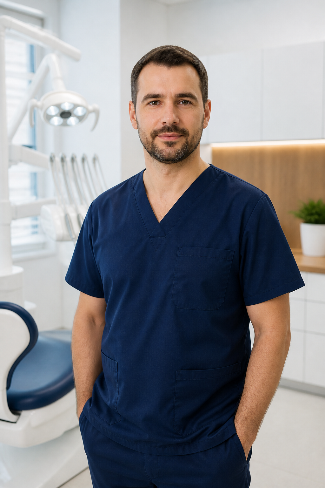
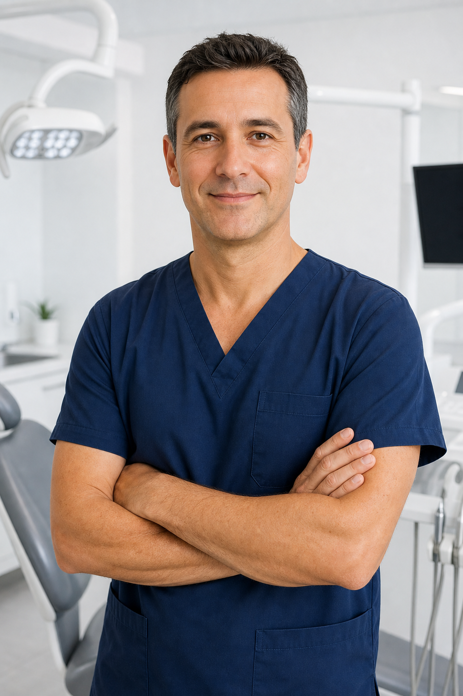

Врач-стоматолог
Тимур Гаджиев
Терапия · эндодонтия · эстетические реставрации
Занимается лечением каналов и восстановлением зубов с вниманием к функции и естественной эстетике.
Первая квалификационная категория
Записаться к врачу ↗От первого лечения до восстановления зубов. Знакомимся, объясняем и находим решение, которое подходит именно вам.
Детям, взрослым
и старшему поколению
Внимание к деталям и к человеку. Наши врачи помогают сохранить зубы, вернуть комфорт и уверенность в улыбке.

Терапия · эндодонтия · эстетические реставрации
Занимается лечением каналов и восстановлением зубов с вниманием к функции и естественной эстетике.

Хирургия · удаление зубов · имплантация
Проводит хирургическое лечение и имплантацию с предварительным планированием каждого этапа.
Не бывает одинаковых пациентов. Поэтому сначала мы слушаем, а затем предлагаем решение.
Обсуждаем, что беспокоит, ваши пожелания и прошлый опыт.
Проводим осмотр. При необходимости назначаем диагностику.
Простым языком рассказываем о вариантах, этапах и стоимости.
Согласовываем план с учётом здоровья, пожеланий и возможностей.
Лечение и протезирование — наши основные направления. А ещё всё, что помогает заботиться о здоровье улыбки.
Лечим кариес и его осложнения, работаем с каналами и восстанавливаем повреждённые зубы. Стараемся сохранить свои зубы как можно дольше.
Записаться на консультацию ↗Восстанавливаем утраченные и сильно повреждённые зубы. Подбираем ортопедическую конструкцию с учётом вашей ситуации, удобства и пожеланий.
Записаться на консультацию ↗Профессиональная чистка, отбеливание и эстетическая реставрация зубов. Врач подберёт процедуры по показаниям и даст рекомендации по домашнему уходу.
Записаться на консультацию ↗Удаление зубов и восстановление утраченных зубов с помощью имплантации. После осмотра и диагностики обсуждаем показания, этапы и дальнейшее протезирование.
Записаться на консультацию ↗Исправление прикуса и положения зубов, включая лечение на брекет-системах. Подходящий способ коррекции обсуждается после осмотра.
Уточнить приём ортодонта ↗Осмотр, рентгенография и компьютерная томография по показаниям. Необходимый объём обследования и условия его проведения уточняйте у врача.
Уточнить диагностику ↗Доступность процедур, приём специалистов и стоимость уточняйте при записи.
Беспокоит зуб, нужна коронка или давно откладываете лечение? Расскажите об этом врачу и задайте свои вопросы.
Состав консультации и необходимость платной диагностики уточните при записи.Спокойное пространство, небольшая команда и внимание к вам — с первой встречи.
Фотографии клиники из 2ГИС. Нажмите, чтобы рассмотреть.
Огромная благодарность Тимуру, замечательный доктор. Лечение прошло безболезненно и быстро, советую!Екатерина Киселева28 мая 2025 · Яндекс Карты
Отличная стоматология! Врач всегда приветлив, выслушает и подскажет, что и в каком порядке лечить. В кабинете и на ресепшене чисто.Кирилл Антонов27 июля 2024 · Яндекс Карты
Очень чуткий и аккуратный стоматолог, человеческое отношение и профессионализм. Теперь планирую лечить зубы только здесь.Денис Д.22 октября 2023 · Яндекс Карты
Ещё отзывы пациентов — на 2ГИС
Позвоните по номеру +7 (922) 444-77-39 или напишите в WhatsApp. Администратор уточнит задачу и подберёт удобное время.
Да, консультация врача бесплатная. Её состав, необходимость дополнительных снимков и стоимость диагностики уточните при записи.
После осмотра врач объяснит варианты и обсудит план лечения. Стоимость зависит от состояния зубов, объёма работы и выбранного решения.
Наличные, банковская карта, перевод, онлайн-оплата, QR-код и СБП. Доступный способ оплаты уточните у администратора.
Рядом с клиникой есть парковка. Вход — со стороны улицы Губкина. Адрес: Сургут, ул. Губкина, 18.
Гарантийные условия зависят от вида лечения и используемых конструкций. Врач расскажет о них до начала лечения.
Будем рады вам и вашим близким.